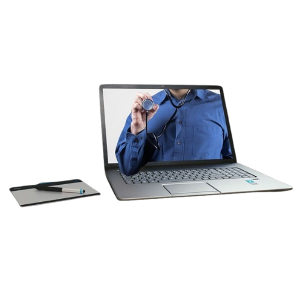

A nova tecnologia traz muitas mudanças para o setor de Seguros de Saúde todos os dias. Em comparação com o antigo sistema (ainda em papel) usado pelas empresas provedoras de seguro de saúde, o atual nos permite usar ferramentas da Web, todos os tipos de opções de pagamento ou depósito eletrônico de reclamações que realmente beneficiam a maneira como lidamos com nosso seguro de saúde
